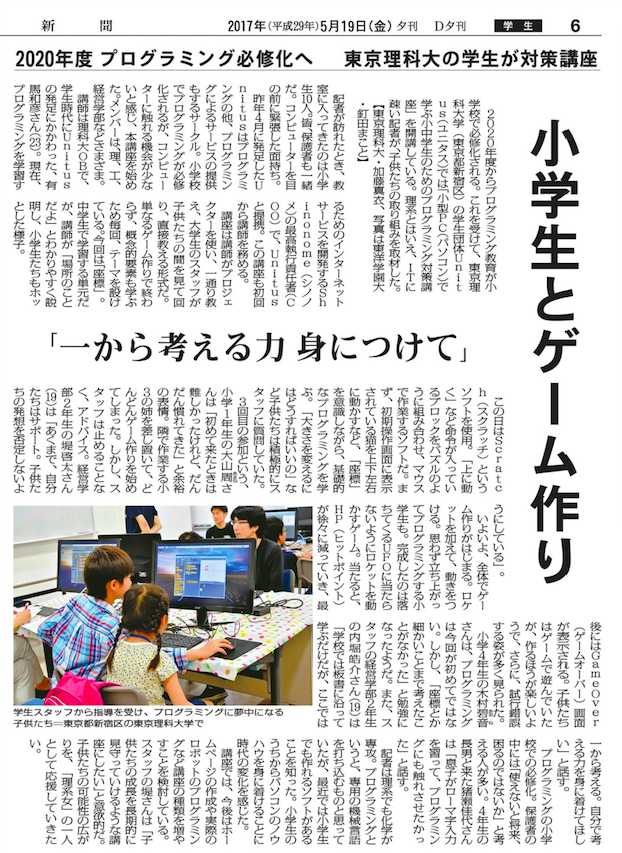

理念
全人類にプログラミングという選択肢を
プログラミングを知らないから、プログラミングを教えられないからで、
可能性を消してしまわないために。
概要
ユニプロはプログラミング教育をメインに活動している、東京理科大学公認団体Unitusに所属する学生が中心となって活動する学生団体です。
2016年8月にUnitusの運営母体である株式会社Shinonomeにより発足し、Shinonome役員がプロジェクトマネージャーとして指揮する中でUnitusに所属する学生が開発・運営を続けてきました。
2017年10月には、PM（プロジェクトマネージャー）が役員から学生に移り、より学生がメインで運営する形にへと代わり、またUnitus内のプロジェクトから独立する形で１つのUnitus姉妹団体となりました。
メンバーは主に東京理科大学の学生ですが、他大学の学生も在籍し大学間の垣根を超えて活動しています。
沿革
- 2016年8月 学生団体Unitusの運営母体、株式会社Shinonomeにより発足。
- 2016年12月 Scratch講座をリリース
- 2017年10月 マインクラフト講座をリリース
関連リンク
ShinonomeHP UnitusHP ユニプロHP目指すところ
ユニプロは大学生が中心となって運営しています。
学生が教育、プログラミング、ビジネスを組み合わせたプログラミング教育事業を運営することで プログラミングの普及に貢献していきます。
現在は単発のイベント形式での講座開催が中心ですが、のちに塾や家庭教師への参入を検討しています。
誰もが受ける権利があるもの、日本の未来をよくするもの、それが教育だと考えるからです。
学校教育では身につくことのできない論理的思考力、創造力を身につけることができる考えるからです。
ただのサークルではなく、営利としてビジネスとして取り組むことで、対価を支払うことができより良いものを作れると考えるからです。
希望を持って大学に入学したけど授業、学生生活つまらないと感じている大学生は多いと思います。
ユニプロでは、実際の事業の運営を経験できるので、普通の大学生活では学べないことが学べます。
会社でもサークルでもない、インターンでもないユニプロでは事業運営を通してメンバーが成長できる、そんな場であり続けたいと思います。
３."また来たい"と思える講座の提供プロジェクトを運営していて、一番嬉しいことは数あるプログラミング教室からユニプロを選んでくれたこと。そしてまた来たいと言って帰ってもらうことです。
メディア掲載実績
ユニプロの活動内容が2017年5月19日の毎日新聞の夕刊にてその模様が掲載されました。
講座を取材いただいたため、講座の模様やユニプロの運営理念について掲載して頂いています。
詳細はこちらからご覧いただけます
募集要項
ユニプロでは現在コアメンバーまたは講師を募集しています
対象は首都圏在住の大学生または専門学校生です。東京理科大学生でなくても構いません。
コアメンバープロジェクトの運営に関わるのがコアメンバーです。
最初は、先輩の指導のもとに講座開発や講座運営など希望する業務を担当します。
経験を積む中で、自分の担当分野で後輩に指導したり、PMとして全体を指揮する立場になることが可能です。
PM（プロジェクト・プロダクトマネージャー）
プロジェクト全体の指揮を取るのが仕事です。講座開発
講座の企画や実際に講座で扱う教材作成を担当します。講座運営
メディア運用
既存顧客マーケティング
講師講座開催当日、参加者のお子さんにプログラミングを直接指導頂ける講師の方を募集しています。
参加者の対象は小・中学生が中心で、初歩のプログラミングの指導となるため、一部講座を除き基本的に講師の方に特に予備知識は必要ありません。
現在、Scratch講座、マンクラフト講座の２種類を開講しています。
マウス操作中心のプログラミング学習ツール「Scratch」を使い、パソコンで簡単なゲームを制作します。
マウス操作中心のプログラミング学習ツール「Scratch」を使い、パソコンで簡単なゲームを制作します。